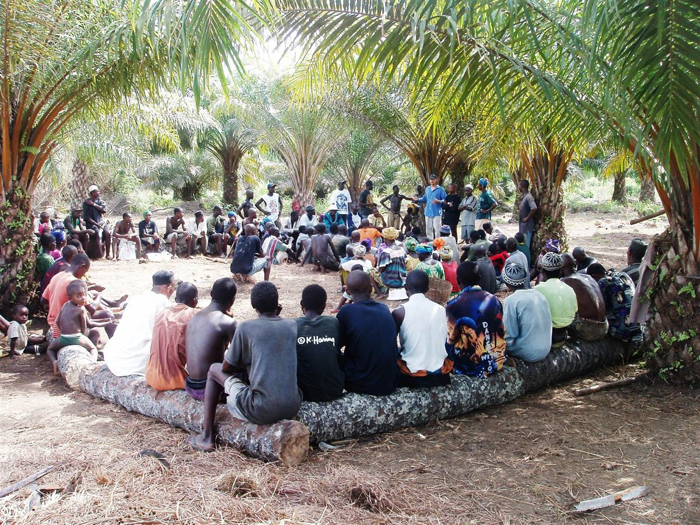
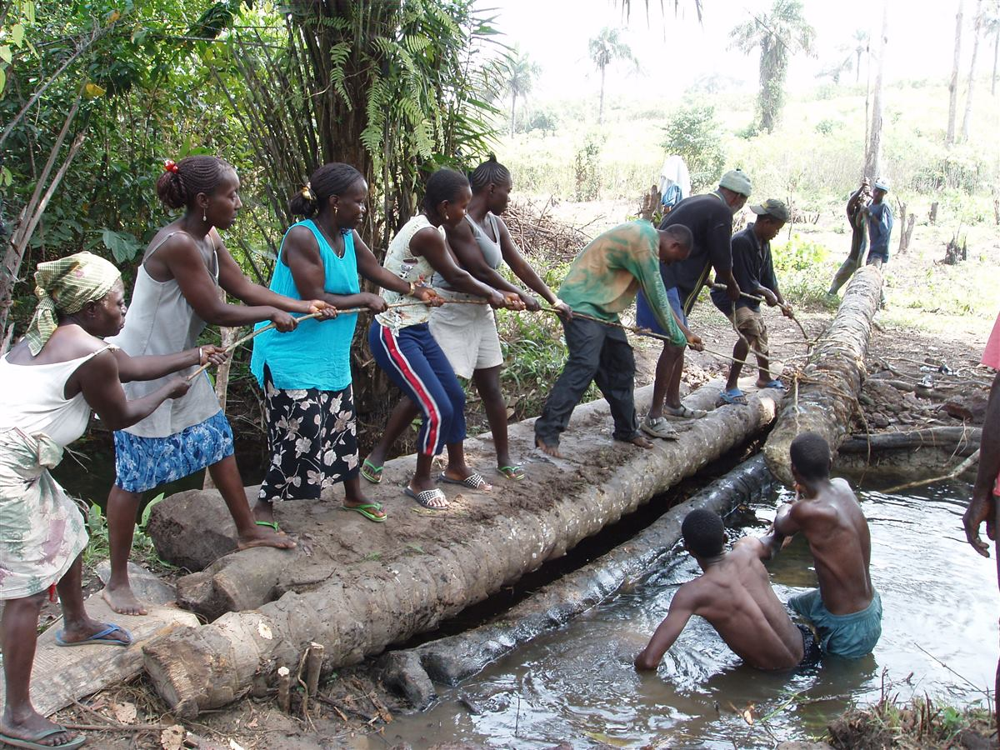
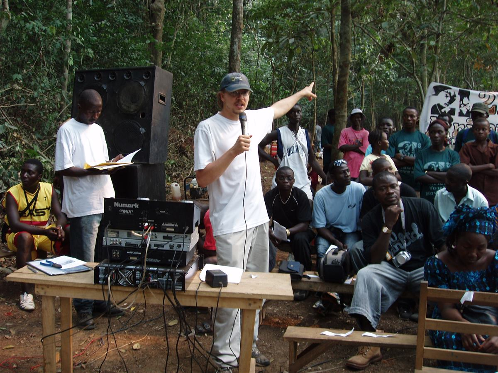

Global Credibility & Grants
Access organizational status to apply for international grants and secure partnership funding that individual groups cannot access alone.

Bring the African Youth Movement to your city or country. Gain the backing, global credibility, and fundraising infrastructure you need to launch grassroots initiatives, hire local talent, and build sustainable solutions.

Access organizational status to apply for international grants and secure partnership funding that individual groups cannot access alone.
Set up localized fundraising through integrated PayPal and digital campaign tools. Raise money directly while maintaining full tracking and transparency.
Combine fundraising power across regional groups to fund large-scale community projects and create direct local employment.
Connect your members to cross-border virtual conferences, leadership training, and the African Lecture Series.
Bring people together around the issues that matter in your community.
Raise funds and apply for grants using AYM's infrastructure.
Hire local talent and build social enterprise models.
Share lessons across the Pan-African chapter network.
Actively AYM’s established organizational status to apply for international grants and secure partnership funding that individual groups cannot access alone.
Set up localized fundraising through integrated PayPal and digital campaign tools. Raise money directly with maintaining full tracking and transparency.
Combine fundraising power across regional groups to fund large-scale community projects and create direct local employment.



Ghana
Nigeria
Sierra Leone
Senegal
Ghana
Nigeria
Sierra Leone
Senegal
Kenya
Uganda
Rwanda
Senegal
Payment integrations, campaign templates and guides.
Operate under AYM's nonprofit framework with clear compliance guidance.
Proven templates for launching programs and local events.
Anyone committed to youth empowerment—individuals or small groups—can apply to start an AYM chapter.
No. Chapters are provided with resources, tooling and fundraising support at no cost.
A fundraising & tech toolkit, legal and governance support, and program & event playbooks.
Submit application → background check → acceptance → start your first project.
Yes, with transparency and compliance oversight from the AYM central team.